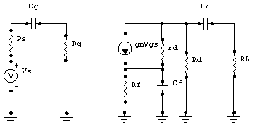

para cada uno de los elementos almacenadores de energía del circuito (en nuestro caso hablamos de Condensadores), suponiendo a los demás elementos almacenadores en cortocircuito; así que:
para cada uno de los elementos almacenadores de energía del circuito (en nuestro caso hablamos de Condensadores), suponiendo a los demás elementos almacenadores en cortocircuito; así que:Núcleo Maracay
Dpto. de Ingeniería Electrónica
IX Término, 03-2004
Prof. Isabel Vera
Secciones A y B
Semana 2: Respuesta en baja Frecuencia para amplificadores con acoplamiento capacitivo y directo.
En la clase pasada dedujimos las frecuencias de corte inferior y superior para dos circuitos específicos RC. Quizás ahora nos preguntamos: pero ¿qué pasa cuándo quiero conocer la frecuencia de corte para un circuito que tiene otra topología?... Pues bien, partiendo del hecho que nos referimos a una función de transferencia con un solo polo, podemos aplicar el principio de superposición para determinar la frecuencia de corte resultante.
Comenzaremos el estudio en Baja Frecuencia, es decir, usaremos las ecuaciones correspondientes al CIRCUITO1 mostrado en la clase pasada.
De esta forma tenemos que:
Para la aplicación del principio de superposición, hallaremos la expresión de la para cada uno de los elementos almacenadores de energía del circuito (en nuestro caso hablamos de Condensadores), suponiendo a los demás elementos almacenadores en cortocircuito; así que:
y
donde Ri0 es la resistencia equivalente vista entre los terminales del condensador en estudio Ci
En el siguiente circuito:
CIRCUITO3
apreciamos que tenemos tres (3) elementos de almacenamiento de energía: Cs. Ce y Cc.
Para hallar la resistencia equivalente vista desde los terminales de cada condensador, necesitamos recurrir al modelo equivalente del transistor (Modelo H); con lo que obtenemos:
y así podemos despejar la frecuencia inferior que aporta cada uno de los condensadores, quedando que:
donde:
(esta ecuación se obtiene a partir de despreciar “hoe”)
Veamos, de manera similar, qué ocurre con un FET en configuración “fuente común”:
Sabemos que su modelo equivalente es:

de manera semejante, podemos decir que es igual a la sumatoria de las frecuencias inferior de corte de cada condensador, estudiado de forma independiente y hallando la resistencia equivalente vista entre sus terminales. Siendo así obtenemos que:
siendo , equivalente a:

Simplifiquemos un poco el análisis que hemos realizado, para poder estudiar etapas acopladas, para ello eliminaremos el condensador a la salida (Cc) y la carga conectada (RL). En este caso, tenemos que
donde
y (haciendo el recorrido de la malla de entrada)
El propósito fundamental de Ce es desacoplar Re en el rango de frecuencias que nos interesa (bajas frecuencias), por tanto, asumiremos que esto quiere decir que . Si esto es así, podemos reescribir la expresión de Ze' como sigue:
y esta última expresión nos “dice” que existe una capacitancia equivalente a .
Ahora bien, los dos últimos sumandos de la expresión del denominador de la ecuación de Vo (vea ) pueden agruparse de forma que:
Esta expresión nos indica que existen dos capacitancias en serie, que nos dan una capacitancia equivalente a C1. Si la sustituimos en la ecuación encontramos que:
Recordemos de la clase anterior que habíamos hecho el estudio para hallar las frecuencias de corte, asumiendo que la ganancia estable del circuito era la unidad, de forma tal que el valor de en dB era 0 para valores superiores a . Habiendo recordado esto, podemos decir que y que la expresión de normalizada a “1” sería:
donde
Esta expresión de es la que usaremos para circuitos con la configuración mostrada al comienzo de esta clase (excluyendo Cc y la carga RL).
Ejemplo práctico:
Teniendo el CIRCUITO3 se desea obtener una frecuencia Inferior de corte no mayor a 10Hz. Asumiendo que Rs=hie=1kΩ y hfe=100,
a) ¿cuál es el mínimo valor que debe tener Cs asumiendo que éste es igual a Ce?
b) Y ¿si Ce=100Cs?
c) Si queremos una pendiente no mayor de 10% al reproducir una onda cuadrada de 50Hz, ¿cuánto debe valer C1?
Para responder al apartado a) (Cs=Ce=812μF) y b) (Cs=16μF, Ce=1,6mF) usamos las expresiones de y la expresión del equivalente capacitivo de C1.
Para responder el apartado c) (Cs=Ce=50μF) utilizamos la expresión de P (vista en la clase pasada) tomando en cuenta que el ancho del pulso es igual a la mitad del período de la señal cuadrada y que la capacitancia equivalente es C1 y la Resistencia equivalente es (hie+Rs).
Al acoplar dos o más etapas como las del CIRCUITO3, usando para ello un condensador de bloqueo para filtrar la componente continua de la tensión de salida de la etapa precedente (Cc), podemos hacer extensivas las ecuaciones de y , a la segunda etapa y etapas siguientes, tomando en consideración que la resistencia Rs que ven estas etapas se corresponde con la resistencia Rc en paralelo con (1/hoe) de la etapa precedente. Si recordamos que Rc<<(1/hoe), entonces la Rs (de todas las etapas excepto la primera) será aproximadamente igual a Rc de la etapa anterior.